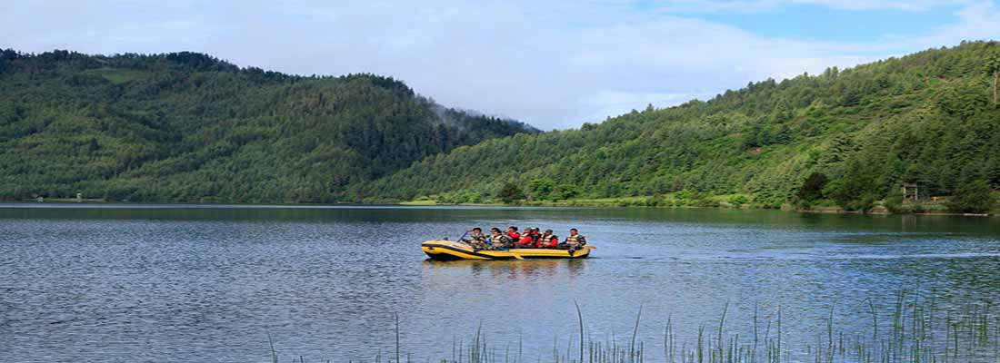

MUGU
The district of Mugu borders the Humla district, in the northern region of the Karnali province. The majority of Mugu is rural, aside from the small town Gamgadhi in its centre. For roughly 55,000 people in the Mugu district, there is a total of 14 public health facilities available; 13 public health posts and one government hospital located in the urban centre of Mugu. Much of the eastern region of Mugu is isolated from any road networks, the only road passes through the centre and the western region. The prevalence of food poverty in Mugu varies as villages split between averages of 46-61% to 37-46% of people living in food poverty. Food poverty is an important indicator for livelihoods in Mugu, as across the wider region of Karnali 1,476,193 people rely on agriculture as a source of income (93% of the population). With up to 61% food poverty in some villages, the lack of local agricultural produce is a significant challenge and strain on the daily survival of people in Mugu. More importantly, the lack of food supply has problematic knock on effects that limits the achievement of children at school, as well as contributing to deteriorating health conditions for many communities in Mugu. Mugu is one of Nepal’s most remote areas and remains relatively unexplored by international travelers and mysterious even to Nepalese. It was part of the ancient Malla Kingdom of the Karnali River basin. It traditionally cultivates the fascinating blend of Buddhist and Hindu religious and cultural practices. The majority of Mugu lies in the rain shadow of the Dhaulagiri and Annapurna Himalayan ranges and is very arid. It is the least developed district of Nepal. Rara Lake, positioned in Mugu district, is Nepal’s largest lake with a circumference of approximately 13km. Further, Mugu has many different wild herbs used in traditional herbal medicine such as the highly valuable ‘Caterpillar Fungi’ (Yachargumba) used in the treatment of amoebic dysentery among other things, guchi chyau which has an anti-spasmodic effect, panchaunle which is used as a tonic, satuwa a poison antidote as well as bhutkesh, kutki and keshar. Though unexplored, Mugu still keeps nature’s secret hidden treasure in the Himalayas. Hence, to have a unique cultural glance in such remote area of Himalayas within Nepal and to touch the purity of Rara Lake, why not join Himalayan Glacier’s locally developed popular trip packages that take into the depths of Mugu district of Nepal.